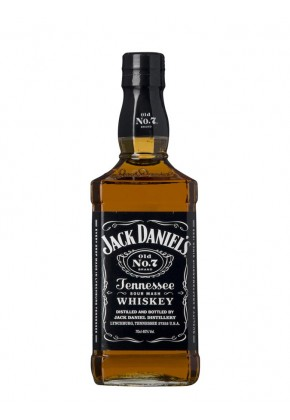

| Accueil | Panier (2) | Catalogue | Qui sommes-nous ? |
| Accueil | Panier (2) | Catalogue | Qui sommes-nous ? |
|  | Jack Daniel's 70cl L'incontournable Jack Daniel's est un whiskey du Tennessee et non un bourbon (Kentucky) : en effet, après distillation, le whisky est filtré par une couche de charbon de bois d'érable de 3 mètres avant sa mise en fût. Ce procédé, le Lincoln County Process,...En savoir plus
|
| Jack Daniel's Gentleman 70cl Ce Tennesse whiskey est filtré sur du charbon de bois avant la mise en fût et, cas unique, avant la mise en bouteille. Une cuvée rare de Jack Daniel's. De couleur ambrée à reflets rougeâtres, le nez aérien dévoile les notes caractéristiques de bois brûlé...En savoir plus
| |
| Jack Daniel's Single Barrel 70cl Embouteillé fût par fût ce mythique Tennessee whiskey devrait ravir les inconditionnels de la marque. C'est l'occasion idéale de découvrir toute la complexité et richesse de ce whiskey si célèbre mais encore méconnu... De couleur ambre soutenu, le nez doux est...En savoir plus
| |
| Jack Daniel's Honey 70cl Jack Daniel’s & Honey une liqueur de whiskey au goût sublimé par le miel. Jack Daniel’s Tennesse Honey est fabriqué à base de l’authentique Jack Daniel’s Old N°7 auquel est ajouté une liqueur de miel. Le goût typique du whiskey filtré au charbon de bois...En savoir plus
| |
| Jack Daniel's White Rabbit 70cl Une édition limitée de la marque Jack Daniel's No. 7, White Rabbit célèbre le 120ème anniversaire de la fondation du Saloon du même nom, le tout premier bar au monde à proposer Jack Daniel's à ses clients. Avant que Lynchburg ne devienne un « dry...En savoir plus
|